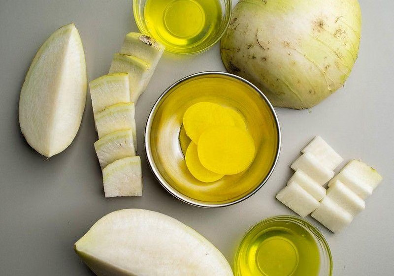

.png)
Danmuji adalah acar lobak kuning khas Korea yang dibuat dari lobak putih yang diawetkan dengan campuran garam, gula, dan cuka. Makanan ini memiliki rasa manis, asam, dan sedikit asin dengan tekstur renyah. Danmuji biasanya disajikan sebagai banchan (lauk pendamping) dalam berbagai hidangan Korea, biasanya makanan daging berlemak.

Siapkan dan timbang semua bahan-bahan yang diperlukan. Masukkan bubuk kunyit 1 gram, cuka beras 36 gram, air 350 mililiter,garam 2 gram dan gula 50 gram ke dalam panci. Letakkan panci diatas kompor dan nyalakan kompor dengan api yang kecil.Aduk sehingga larutan menyatu dan mendidih.
Potong ujung lobak agar mudah untuk dikupas menggunakan pisau. Kupas lobak hingga tidak bersisa kulit, menggunakan pisau pengupas. Cuci lobak sehingga bersih dan pastikan tidak berkulit.Iris 251 gram lobak dengan bentuk yang tipis, tidak disarankan terlalu tipis,karena dapat mempengaruhi penyerapan larutan bubuk kunyit.
Masukkan irisan lobak ke dalam toples kaca dan tuang larutan bubuk kunyit ke dalam toples kaca tersebut.Tutup toples kaca dan tinggalkan di luar, tidak di dalam kulkas.Setelah 2 hari, lakukan yang sama untuk percobaan kedua. Jika sudah, masukkan kedalam kulkas untuk memperlambat fermentasi.
Lobak akan difermentasi sehingga menjadi acar lobak kuning dengan variasi waktu 168 jam dan 216 jam (7 dan 9 hari).Test rasa, aroma, dan pH selama 2 hari sekali, tes pH menggunakan kertas lakmus. Hasil rasa,aroma dan PH selama 9 hari dicatat dan dianalisis.
9A/02